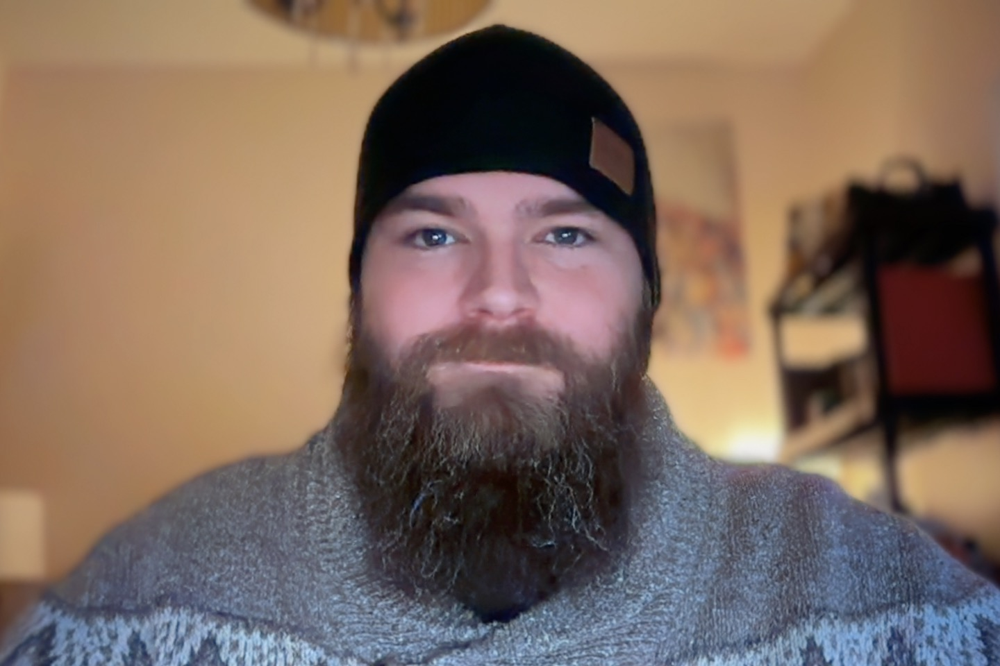

This image exists to confirm that I am, in fact, a real person and not
three HTML files in a trench coat.
Summary
Aspiring web developer currently learning the fundamentals of HTML and web
development. Curious, persistent, and not afraid to break things (and then
fix them). Actively working toward becoming a capable, reliable developer
with a strong willingness to learn.
Education
High School Diploma Graduated: 2005
Online Web Development Course Currently enrolled and learning something new every day
Work Experience
Personal Projects - Web Development
Self-directed (kinda) | Jan 2026 - Present
Responsibilities and activities:
Building basic web pages using just HTML (so far)
Created a multi-page resume website
Learned to use documentation instead of guessing (most of the time)
Practiced structuring content for clarity, accessibility, and sanity
Future Position (Planned, Optimistic, and Inevitable)
Awesome Web Developer
Expected start date: Summer 2026 (or some other time, not really
sure how long these things take 😁)
Anticipated Responsibilities:
Building clean, functional, and user friendly websites
Solving problems that once seemed impossible
Occasionally Googling things and pretending it was "part of the
plan"
Skills
HTML5 fundamentals
Structuring web page content
Problem solving and critical thinking
Independent learner
Attention to detail (especially after something breaks)
Achievements
Completed multiple introductory web development projects